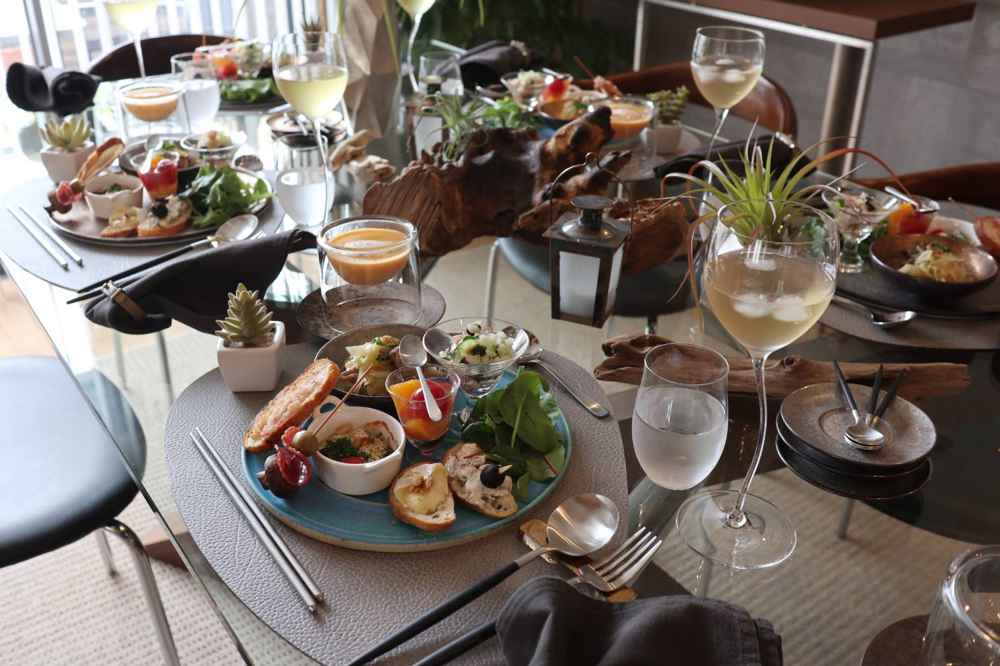
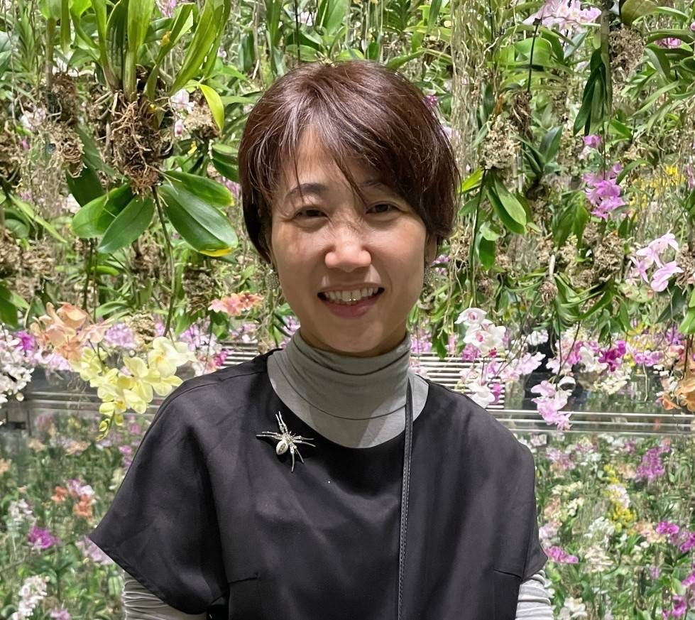

おもてなしを、もっと気軽に
約3ヶ月ごとにテーマを変えて、季節に合わせたテーブルコーディネートと簡単なおもてなし料理をご紹介しています。
料理のジャンルも和洋中エスニックアジアンと様々です。
日々の暮らしの延長に、素敵なおもてなし空間を気軽に実現できたら楽しいですよね！
◆ 毎回テーブルコーディネートとお料理が同時に学べ、最後は皆さんで楽しくランチという濃厚レッスン
◆ 毎回完結レッスンなので、お好きなテーマやタイミングでご参加いただけます
◆ テーブルコーディネートのデモンストレーションでは、グッズの購入先やお値段も参考までにお伝えしています
◆ お料理も全工程をご覧いただけるデモンストレーション形式（盛り付けのみ皆さまで）なので初心者の方も安心してご参加ください
◆ 2025年12月で教室スタート20周年を迎えました！
◆ テーブルコーディネートを習ってみたい方
◆ スーパーなどの身近な食材で手軽なおもてなし料理を習ってみたい方
◆ 家庭でのおもてなしの段取りを学びたい方
◆ インテリアが好きな方・お友達のおうちでおもてなしを受ける感覚で楽しく受講したい方


奈良女子大学生活環境学部食物栄養学科卒
結婚後、おもてなしの趣味が高じてテーブルコーディネート＆おもてなし教室 NATURAL DINING を主宰。
2025年で教室スタートから20周年を迎えました。
京都たん熊北店にて15年以上京料理を学ぶ。
息子2人は巣立ち、現在は夫と2人暮らし。
トイプードル（女の子）らんを溺愛中。
季節のお茶と小さなお菓子をご用意しております。
リラックスした雰囲気の中で、当日のレッスン内容をご案内いたします。
講師がポイントを説明しながら、お料理の流れをデモンストレーション形式でご紹介します。
調理のコツやアレンジ方法もお伝えしますので、ご自宅でも再現しやすい内容です。
完成したお料理を、美しくコーディネートされたテーブルで皆さまとご一緒にいただきます。
おもてなしの雰囲気を楽しみながら、ゆったりとした時間をお過ごしください。
お食事を楽しみながら、ご質問やご感想を伺います。
テーブルコーディネートやお料理について、気になることは何でもお気軽にご相談ください。
皆さまで協力してお片付けを行います。
終了後には次回レッスンや季節のテーマについてもご案内いたします。
レッスン終了後は自由解散となります。
ご参加ありがとうございました。
またお会いできますことを楽しみにしております。
開催時間 10:00～13:00
自宅教室のため10:15から教室をOPENします。
10:15～10:30の間にお越しくださいませ。
終了時間は若干変わりますので、お帰り時間が決まったておられる方は、
事前にお知らせください♪
場所 阪急長岡天神駅から徒歩５分
JR長岡京駅から徒歩20分（タクシー１メーター）
駐車場 駐車場が２台
お申し込みの際にお知らせください
過去のレッスンの雰囲気をご覧いただけます
ご予約はInstagramのDMよりお気軽にどうぞ
Instagram DMで予約する